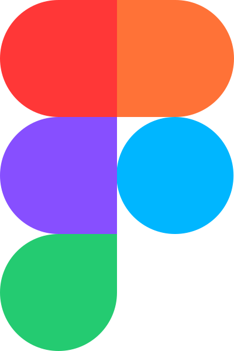
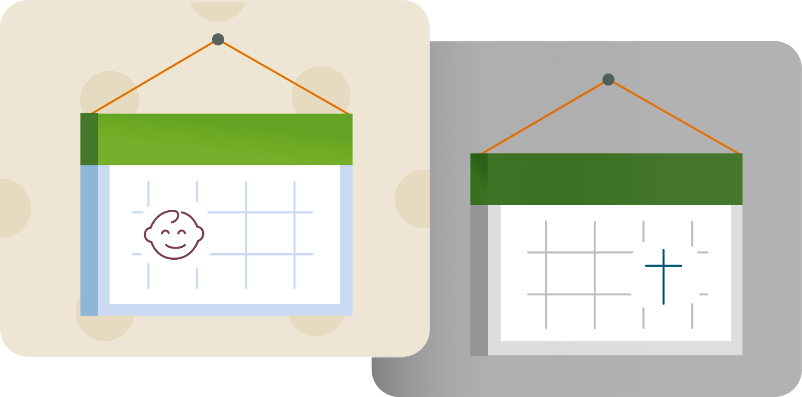
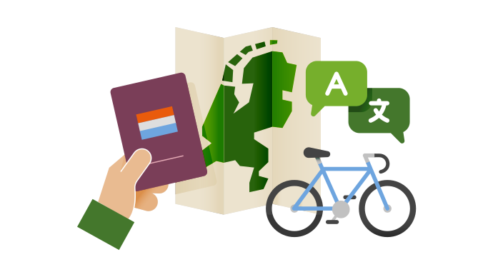
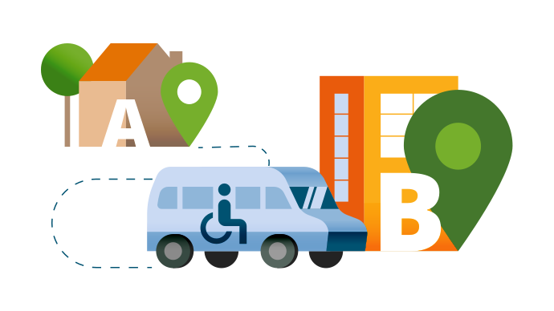
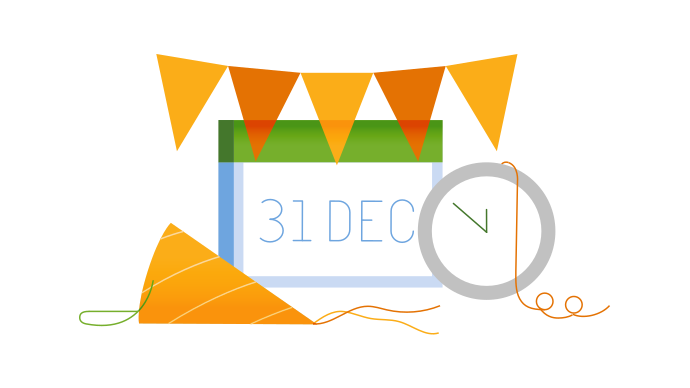
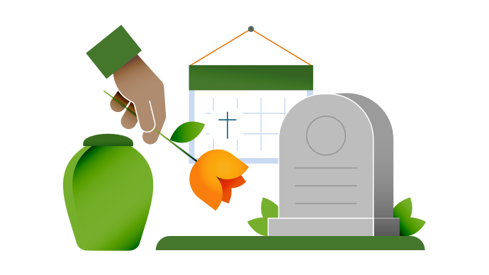
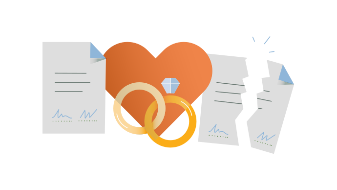
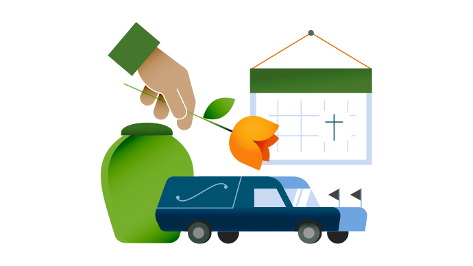
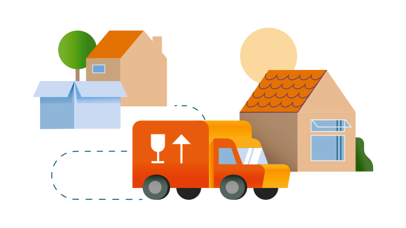

Token-Studio JSON
Onze illustraties kan je gebruiken met Token Studio op GitHub. Importeer het JSON bestand en je kan de kleuren wijzigen naar je eigen huisstijl.
Bekijk de Token-Studio bestandSamen met gemeente Westland ontwikkelden we deze illustratieset speciaal voor overheidscommunicatie: 40+ illustraties, in te kleuren in de huisstijl van je eigen organisatie. — zoals die van hun hieronder.
Onze illustraties kan je gebruiken met Token Studio op GitHub. Importeer het JSON bestand en je kan de kleuren wijzigen naar je eigen huisstijl.
Bekijk de Token-Studio bestand
Elke illustratie is in het Figma bestand opgebouwd met kleurtokens. Kopieer het bestand en werk direct met je prototypes.
Open in het Figma BestandAl tevreden met de gekozen kleurenpalet? Download de complete illustratie set hieronder als ZIP-bestand.
Download de illustratiesetHieronder kan je voorbeelden van de illustratie set zien in de huisstijl van gemeente Westland, downloadbaar in SVG formaat met één klik.
 Toptaken
Toptaken
 Belasting
Belasting
 Bouwen
Bouwen

Burgelijk stand Contact
Contact
 Geboorte
Geboorte

Integratie
Mobiliteit
Nieuwjaar
Overlijden
Trouwen / Scheiding
Uitvaart
Verhuizen Dagbesteding
Dagbesteding